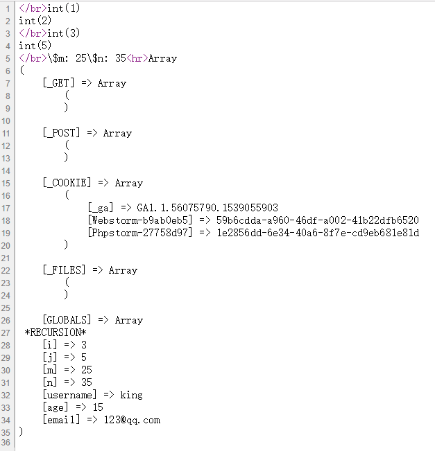
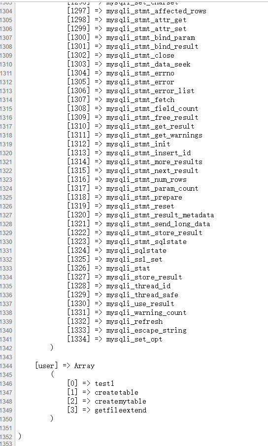

1，
//检测函数名称是否存在的函数
var_dump(function_exists('strtolower'));
var_dump(function_exists('hzy');2，
//获得文件拓展名
if (!function_exists('getFileExtend')) {
function getFileExtend($fileName){
return pathinfo($fileName, PATHINFO_EXTENSION);
}
}
echo getFileExtend("123hzy.php");
echo '</br>';3，变量的作用域
局部变量
·函数体内声明的变量为局部变量
·局部变量分为动态变量和静态变量
--------------
动态变量
·函数执行完毕之后立即释放
-------------
静态变量
·通过static关键字声明的变量为静态变量，，当第一次调用函数的时候相当于初始化静态变量，当函数执行完毕之后静态变量没有释放，而是保存在静态内存中，当再次调用函数的时候首先从静态内存中取出变量的值接着执行。
-----------
4、
//global声明变量的正确方式
function test4() {
global $m,$n;
$m = 25;
$n = 35;
echo '\$m: ',$m,'\$n: ',$n;
}5、
//超全局变量，不管函数体内，函数体外都能得到， 以键值对的形式出现，
print_r($GLOBALS);
所以获取GLOBALS要以下方的形式：
function test5() {
echo '用户名为： '.$GLOBALS['username'].'</br>';
echo '年龄为： '.$GLOBALS['age'].'</br>';
echo '邮箱为： '.$GLOBALS['email'].'</br>';
}//超全局变量赋值
function test6() {
$GLOBALS['age'] = 22;
}
test6();
var_dump($age);6、值传递和引用传递
引用传递直接修改变量本身的内存数据
/*传值：默认情况下，函数参数通过值传递
,所以即使在函数内部改变参数的值也不会改变函数外部的值
*/
/*
* 传引用，可以通过在参数前添加&符号，代表通过引用传递参数
* ，在函数内部对其所操作影响其本身
*/
//只有变量能当作引用被传递
echo '</br>';
//取变量的地址
function test1(&$j) {
$j += 13;
var_dump($j);//int(18)
}
$m = 5;
test1($m);
var_dump($m); //int(18)7、一个非常重要的函数，运用于二次开发
/*get_defined_functions()得到所有已定义的函数，返回是数组
，包含系统函数和用户自定义的函数
*/
//这个函数非常有用，特别用于二次开发
print_r(get_defined_functions());
【user】表示用户自己创建的函数。